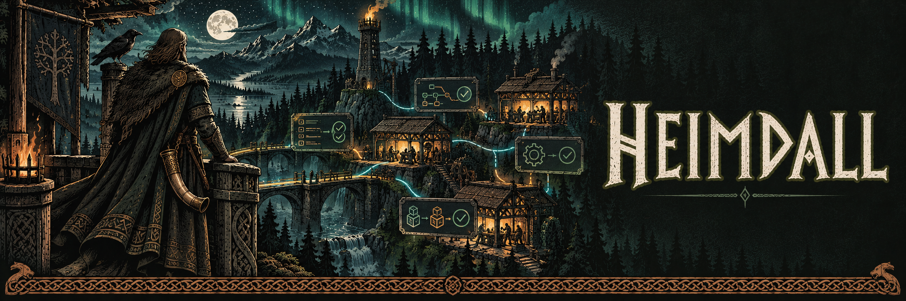

Follow projects and pipelines
Move from a project overview into plans, tasks, attempts, worktrees and the evidence behind each status.

v0.1.0 · Experimental source release
A local operator dashboard for projects, pipelines, agents and delivery.
Move from a project overview into plans, tasks, attempts, worktrees and the evidence behind each status.
Use explicit approvals, mission controls and delivery reviews. Controls show whether the source service confirmed the action.
Follow live events with reconnect handling, stale state labels and persistent notifications. Inspect raw events when you need detail.
Heimdall is the operator interface. Mimir remains the source of execution state; Sindri owns planning and delivery. Heimdall connects through authenticated APIs and event streams rather than editing their databases.
Node.js 24 or newer and pnpm. Connect an existing local Mimir service after startup.
Clone Heimdall and run these commands from its root directory.
pnpm install --frozen-lockfile
pnpm build
pnpm test
pnpm startRead the full project guide for configuration and service connections.
What we have verified
51 Node tests passed. Automated accessibility covered eleven screens, both themes and three viewport sizes. Stress checks covered 25,000 events and three reconnect cycles.
Explore the tools, setup guides and release notes on each project site.